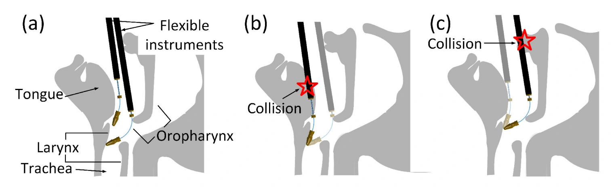

Jianghua Chen
陈江华Postdoctoral Fellow
Department of Surgery, The Chinese University of Hong Kong
I design robotic instruments for minimally invasive surgery. My work on transoral surgery combines flexible joints that bend through the airway with articulated wrists that can grasp tissue in the confined space of the larynx. I also study how to model, cool, and optimize shape memory alloy actuators for these instruments. My recent projects include a handheld needle driver for endoscopic ultrasound-guided biopsy and robotic ultrasound scanning.
Education
- Aug 2019 – Jul 2024
PhD in Mechanical and Automation Engineering
The Chinese University of Hong Kong
Supervised by Prof. Shing Shin (Bernard) Cheng.
- Sep 2015 – Jan 2018
MEng in Mechanical Engineering
Harbin Institute of Technology, Shenzhen
Supervised by Prof. Bing Li.
- Sep 2011 – Jun 2015
BEng in Mechanical Design, Manufacturing, and Automation
Xiangtan University
Work experience
- Aug 2026 – present
Postdoctoral Fellow
Department of Surgery, The Chinese University of Hong Kong
Supervised by Prof. Zheng Li.
- 2024–2026
Research Associate
Department of Mechanical and Automation Engineering, The Chinese University of Hong Kong
- Jan – Aug 2018
Mechanical Engineer
Robotics Department, Midea Group
Led mechanical design and prototype testing of a bedside limb-training system for stroke rehabilitation.
- Jan 2016 – Apr 2017
Mechanical Engineering Intern
Broadcare Medical Robot Co., Ltd., Shenzhen
Designed a vibration module and a gripper for an intravenous drug compounding robot.
Selected projects
All projects


Teaching and mentorship
- Aug 2022 – Jul 2024
Final-Year Project Mentor
The Chinese University of Hong Kong
Supervised two cohorts of students developing a soft gastric simulator for endoscopy training and a beating-heart simulator for pericardiocentesis training.
- Sep 2019 – Jul 2022
Teaching Assistant
The Chinese University of Hong Kong
Taught tutorials and labs across six offerings of four courses in computational mechanics, design and fabrication, manufacturing, and finite element analysis.
Selected awards and funding
- 2024–2026
Research Talent Hub Funding
Innovation and Technology Fund, Hong Kong
- 2019–2024
Postgraduate Studentship
The Chinese University of Hong Kong
- 2017
Excellent Paper Award
17th International Manufacturing Conference in China